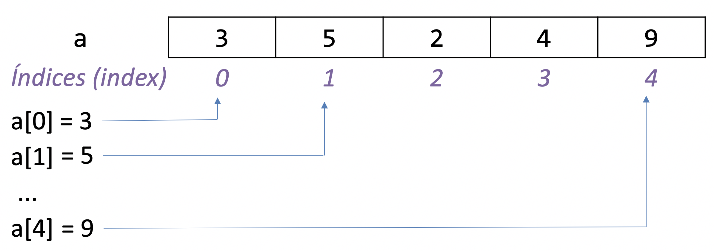

06 - Listas
O objetivo de aprendizado deste handout é que, ao final da atividade, você seja capaz de utilizar listas em seus programas em conjunto com as estruturas que vimos nas aulas anteriores (input, if, while, etc.). Vamos começar com um aquecimento.
EXERCÍCIO 1
EXERCÍCIO 2
E se fosse um MOOC (Massive Open Online Course)?
O que aconteceria se ao invés de 6 notas tivéssemos 10000 notas? Ainda seria possível (mas definitivamente não recomendável) copiar e colar as mesmas linhas para adaptar o código para essa nova situação. Pior, sempre é possível que o usuário precise de 1 nota a mais e você teria que alterar o seu programa novamente. O problema é que o programa escrito dessa forma pode armazenar uma quantidade fixa de notas. Seria interessante termos alguma forma de armazenar uma quantidade variável de notas, que fosse aumentando conforme a demanda. É aí que entram as listas em Python.
O tipo list
Listas são uma das mais formas mais comuns de se organizar uma sequência de dados em Python. Para acessar um dado armazenado em uma lista utilizamos a sua posição, ou índice. Por exemplo, o código a seguir cria uma lista com os números 3, 5, 2, 4 e 9 e a armazena em uma variável chamada a:
Lembrando que em programação começamos a contar a partir de zero, o elemento no índice 0 (zero) é o primeiro elemento (número 3), no índice 1 é o segundo elemento (número 5), no índice 2 é o terceiro elemento (número 2) e assim por diante. Note que o último índice possível é igual ao tamanho da lista subtraído por 1. No nosso exemplo, o índice do último elemento é 4 e a lista tem tamanho 5.

Cabe tudo em uma lista!
Uma característica importante de listas é que elas podem guardar qualquer tipo de dados disponível no Python. Basta colocar os itens entre colchetes e separá-los por vírgulas. Por exemplo:
lista_de_strings = ['banana', 'abobora', 'maçã', 'jaca']
lista_de_ints = [3, 5, 2, 1, 3] # Sim, pode ter elementos repetidos
lista_de_floats = [3.14, 2.7, 1.00001]
Podemos inclusive criar listas vazias:
Mas qual é a utilidade de criar uma lista vazia? Você se lembra que comentamos acima sobre armazenar uma quantidade variável de elementos? Em uma lista é possível adicionar novos elementos conforme a necessidade.
Acessando elementos de uma lista
Para acessar um elemento de uma lista utilizamos a sua posição (índice) entre colchetes. Por exemplo, para acessar o terceiro elemento da lista a = [3, 5, 2, 4, 9] utilizamos o comando a[2].
Descobrindo o número de elementos em uma lista
Podemos utilizar a função len() para descobrir o tamanho de uma lista, ou seja, quantos elementos estão disponíveis nessa lista.
EXERCÍCIO 3
Substituindo elementos em uma lista
Podemos também substituir o elemento em um índice específico da lista. Por exemplo, na lista a = [1, 2, 5, 7] podemos substituir o segundo elemento pelo número 3 da seguinte maneira:
EXERCÍCIO 4
:::
Adicionando e removendo elementos em uma lista
Comentamos anteriormente que a lista pode guardar uma quantidade arbitrária de elementos. Essa quantidade pode, inclusive, mudar ao longo do tempo. Podemos adicionar e remover elementos a uma lista com o operador del e a função .append().
Exercício 5
Resposta
A lista animais armazena o valor "hamster" no índice 4.
Ao utilizarmos o operador del estamos removendo o valor no índice 4. Desta forma, ao testar o código acima, foi impresso ["cachorro", "gato", "coelho", "livro", "peixe"] no terminal.
Exercício 6
Resposta
O valor "livro" está no índice de número 3. Desta forma, para remover o valor "livro" da lista animais, utilizamos o código del animais[3].
Como estamos trabalhando com lista, utilizamos os colchetes. Assim, os códigos del animais(4) e del animais(3) não são válidos.
Exercício 7
Resposta
Foi impresso ["cachorro", "gato", "coelho", "peixe", "hamster"].
Ao utilizarmos a função append passamos como argumento da função o valor que queremos armazenar na lista. Esse valor é adicionado ao final, dessa forma, os valores que já estavam armazenados na lista continuam com o mesmo índice.
Note também, que não existe nenhum espaço vazio entre o ponto (.):
animais.append("hamster").
Soma e multiplicação de listas?
Existe a opção de somarmos uma lista a outra. O resultado é uma nova lista com os elementos de ambas. Por exemplo:
lista_1 = [1, 2, 3]
lista_2 = [4, 5, 6]
lista_1_e_2 = lista_1 + lista_2
print(lista_1_e_2) # Vai imprimir [1, 2, 3, 4, 5, 6]
lista_2_e_1 = lista_2 + lista_1
print(lista_2_e_1) # Vai imprimir [4, 5, 6, 1, 2, 3]
Além disso, também temos a opção de multiplicar uma lista por um número inteiro. Lembrando da matemática, multiplicar um número \(m\) por outro número \(n\) é o mesmo que somar \(m\) com ele mesmo \(n\) vezes. Ao multiplicarmos uma lista por um número temos um resultado análogo:
numeros = [1, 2, 3]
numeros_vezes_3 = numeros * 3 # Análogo a: numeros + numeros + numeros
print(numeros_vezes_3) # Vai imprimir [1, 2, 3, 1, 2, 3, 1, 2, 3]
EXERCÍCIO 8
Como sempre, resolva os outros exercícios disponíveis.